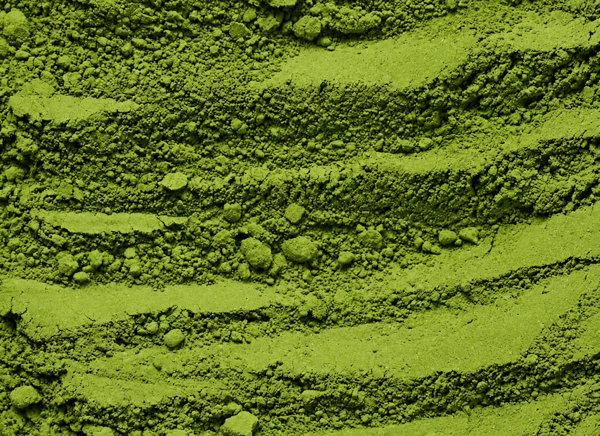
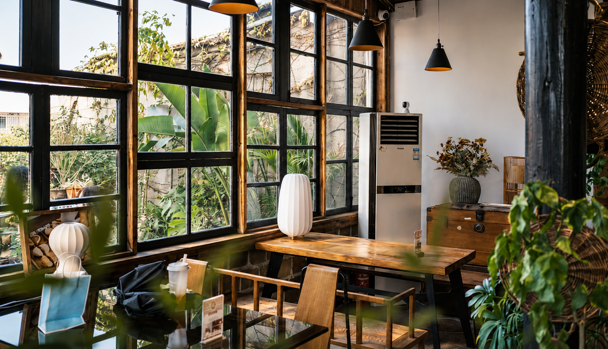
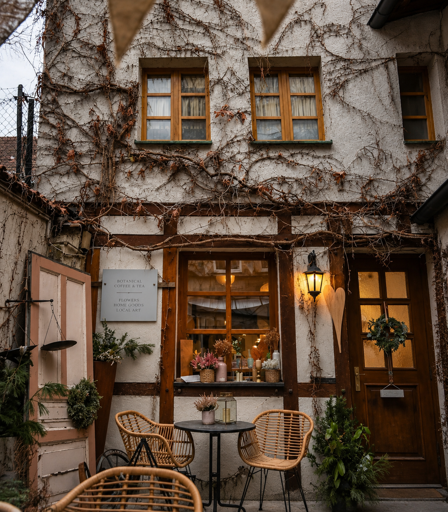
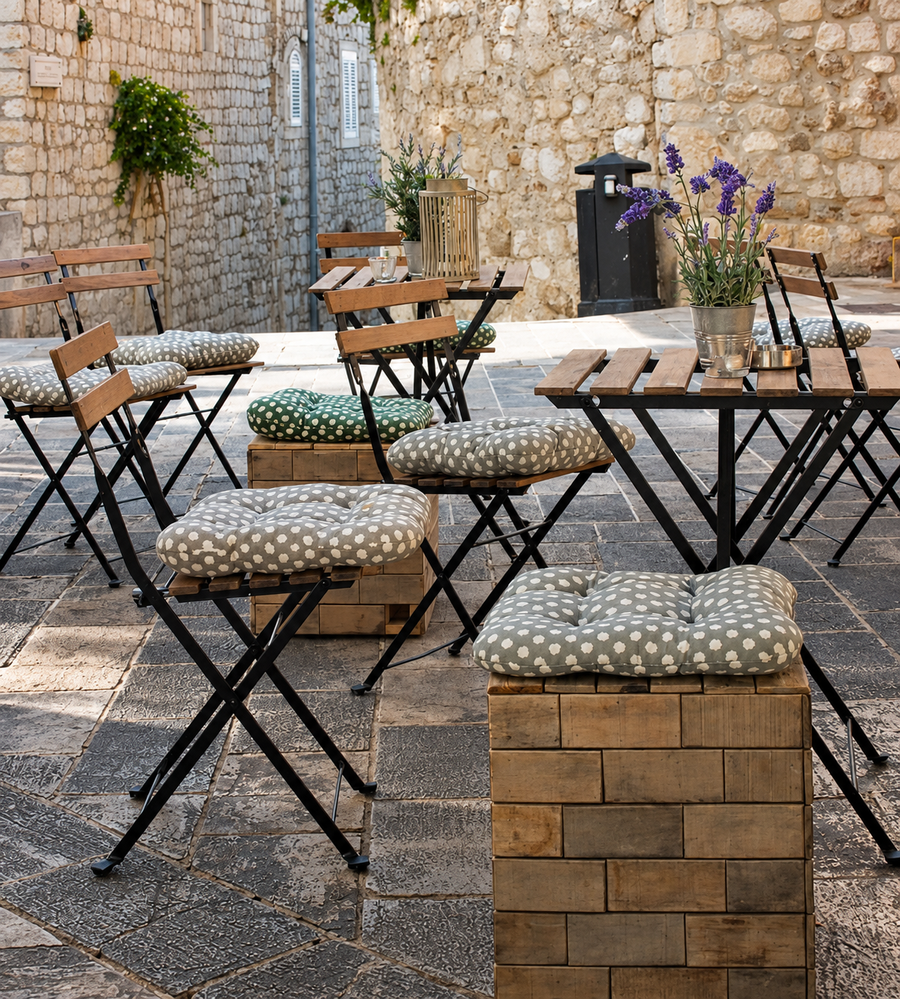

A long journey.
A finely ground leaf.
Powdered tea traditions began in China and later took root in Japan. There, matcha became a ritual of its own: shade-grown tencha leaves, carefully dried and ground into a fine green powder.
From Uji to Nishio, place and cultivar shape the cup. Samidori, Okumidori and Yabukita each bring a different character. "Ceremonial" and "culinary". The story behind those differences starts in the tea garden.
Read more ↗
Two paths.
One shared table.
Jacob Mori came from a small bakery kitchen; Daniel Reed from designing neighbourhood spaces. They met over a bowl of matcha and kept returning to the same idea: something prepared with care should feel welcoming, not intimidating.
MIDORI grew from their weekend experiments with tea, pastries and a borrowed table. Hana brought patience for the details. Daniel brought a feel for places people want to stay. Together, they imagined a café where a daily drink could become a small moment of belonging.
Read more ↗
A little slower.
A little more present.
Matcha whisked to order. Seasonal drinks and desserts that follow our curiosity. Pale stone, warm wood and a quiet corner to call your own. At MIDORI, thoughtful preparation meets everyday hospitality — whether you have five minutes or a whole afternoon. Here's how we imagined a space that makes room for both.
Read more ↗

